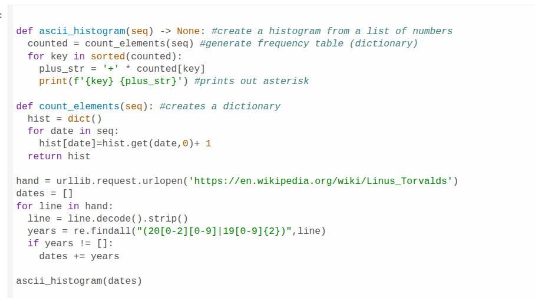
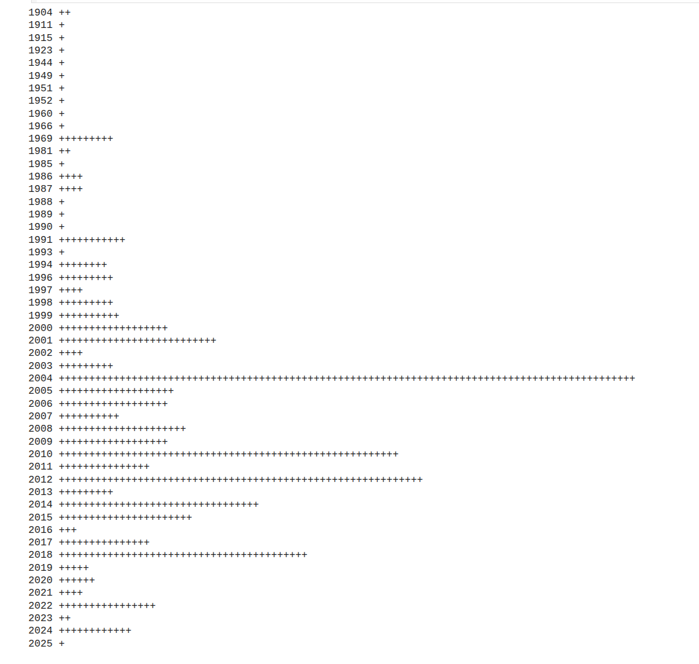

Data Analysis Artifact


Python script that collects and analyzes date references from Linus Torvalds' Wikipedia page using web scraping and ASCII-based histogram visualization. This artifact demonstrates data collection, processing, and representation.